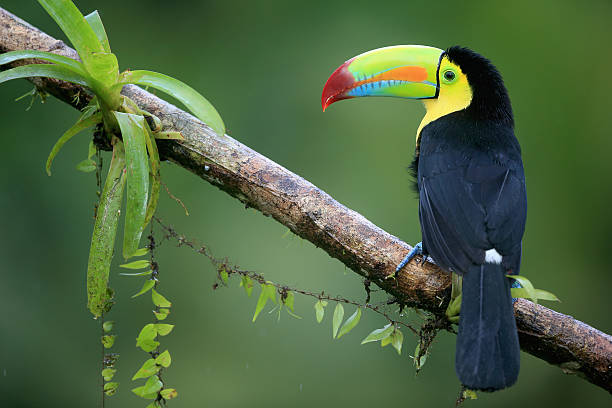

DetalhesNessa página, convidamos você a mergulhar mais fundo no mundo fascinante dos tucanos. Explore informações detalhadas sobre sua habitat natural, dieta variada, comportamento intrigante e características físicas únicas que os distinguem de outras aves. Descubra como essas criaturas incríveis se adaptaram a uma ampla gama de ambientes e como interagem dentro de seus ecossistemas. Prepare-se para uma jornada educativa e envolvente enquanto desvendamos os segredos e curiosidades por trás dessas aves tropicais vibrantes. |
Família Ramphastidae: a família dos tucanosRamphastidae, da ordem Piciformes, é a família de aves na qual estão inseridos os tucanos e também os araçaris e saripocas. A família possui 34 espécies, as quais estão incluídas em seis gêneros. As aves da família Ramphastidae são encontradas na região neotropical, desde o México até a Argentina, ocupando hábitats como florestas tropicais, manchas florestais e florestas montanhosas. A única espécie que ocorre em áreas abertas é Ramphastos toco, popularmente chamado de tucano-toco ou tucanuçu. No Brasil, a maior diversidade de espécies dessa família é observada na região Amazônica." As aves da família Ramphastidae apresentam como característica mais marcante a presença de um bico colorido e grande.Apesar de ser um bico grande, ele é leve, formado por trabéculas ósseas de aspecto esponjoso. O bico diferenciado desses animais é importante para garantir a colheita de frutos em locais inacessíveis a outras aves. Além disso, o bico do tucano:
Vale destacar que as aves dessa família, devido à alimentação que inclui frutos, apresentam grande importância ecológica, atuando como dispersoras de sementes. |
 |